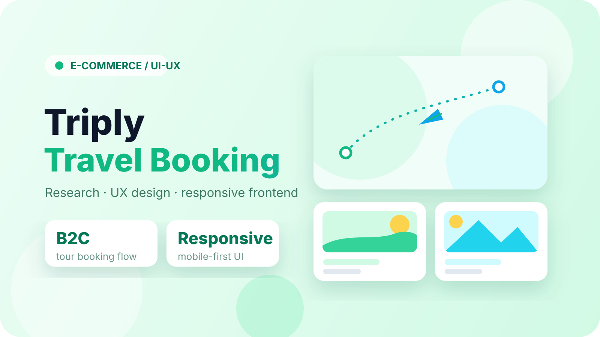

Project Overview
I researched the travel booking market, defined the target user journey, and developed the frontend for a tour booking platform serving domestic and international travel customers.
E-Commerce / UI-UX
A B2C travel platform concept combining business analysis, UX design, and frontend development for a seamless tour booking experience.

I researched the travel booking market, defined the target user journey, and developed the frontend for a tour booking platform serving domestic and international travel customers.
The project demonstrated how research, UX design, and frontend development can combine to shape a clean and usable e-commerce travel experience.